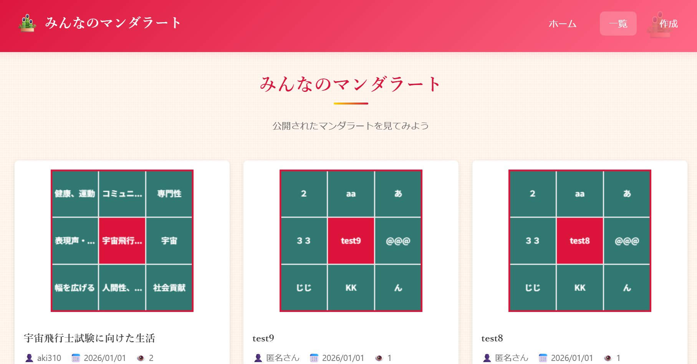
みんなのマンダラート
目標達成シートで有名なマンダラートをWeb上で作成、投稿するサイト。
年末年始にClaude Codeで開発。

目標達成シートで有名なマンダラートをWeb上で作成、投稿するサイト。
年末年始にClaude Codeで開発。
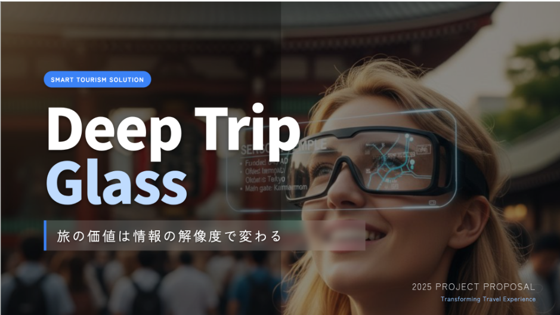
2025年12月12日～14日に開催されたイベントに参加。観光地情報の生成基盤＋ARグラス向けアプリを開発
ブログ記事を書きました。
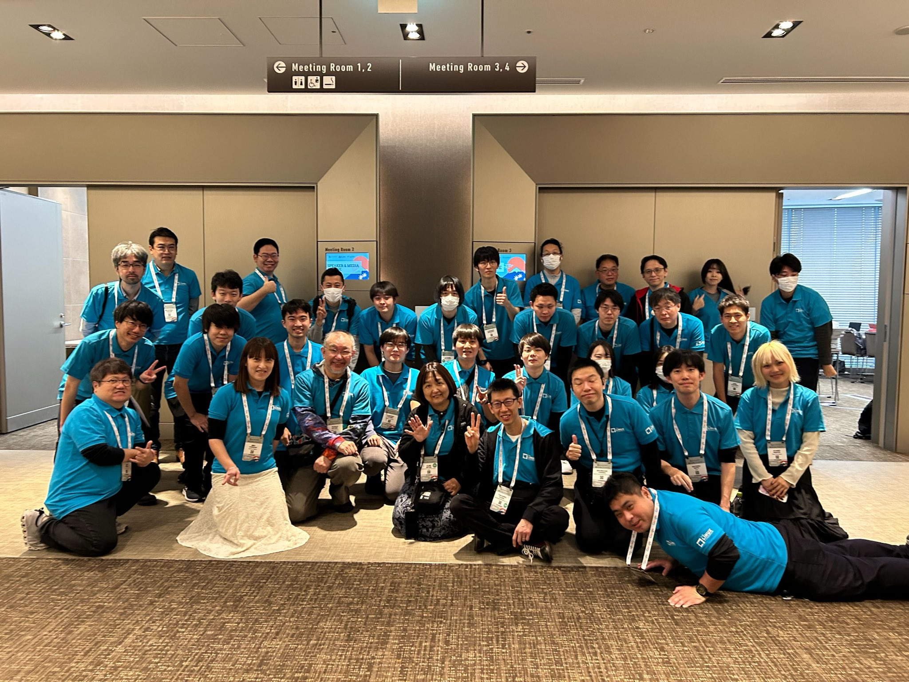
2025年12月8日～10日に開催されたイベントに参加。
ブログ記事を書きました。
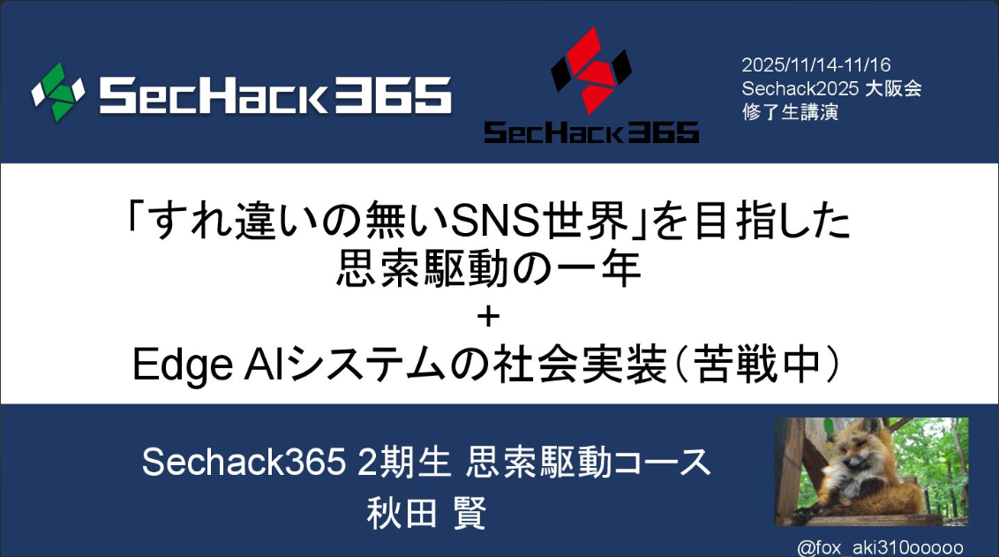
2025年11月大阪会向けに、修了生として講演。
参加当時の活動「すれ違いのないSNS世界を目指した1年」＋会社の活動「EdgeAIの社会実装」
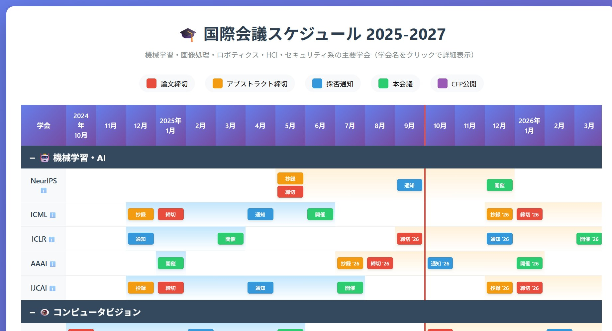
論文投稿に関心のあるSWエンジニア向けに、国際会議のスケジュール一覧表示サイトを作成。
機械学習・画像処理・HCI・セキュリティ系の会議一覧を取得し、Googleスプレッドシートに集計し表示する仕組みを構築。
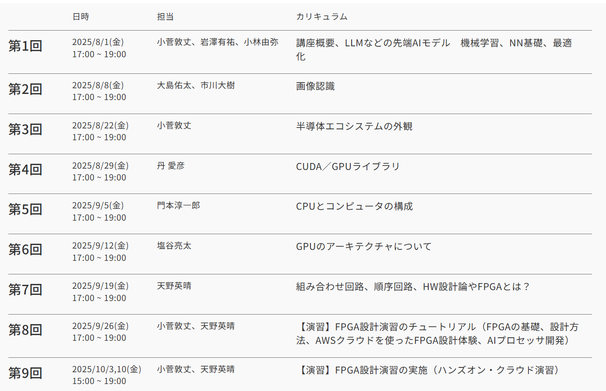
AI系チップの設計が出来るようになれたらと思い、受講。
正直設計の足元にも入門できなかったが、GPU/NVIDIAの歴史や半導体設計の理論的な内容は学べた。 毎週ブログに内容を纏める活動を維持できたのは良かった。
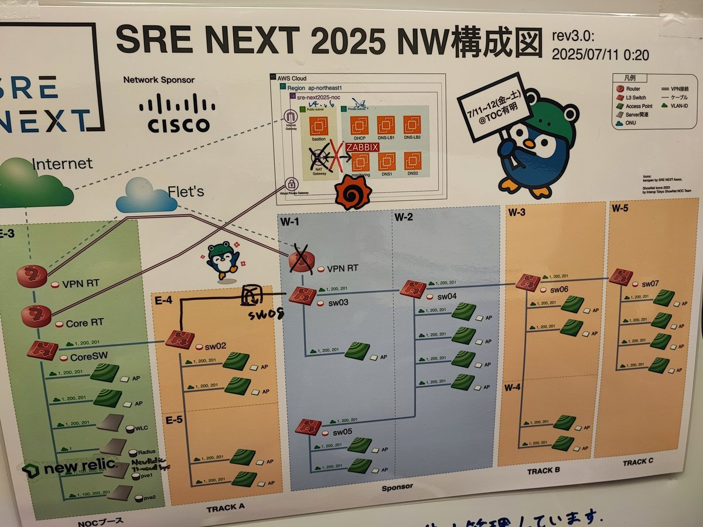
SRE NEXTというSWカンファレンスに、Network Operations Centerとして参加
数百万円するスイッチングハブの設定、会場の有線/無線機器の設置などを実施。 （正直おんぶ抱っこでしたが、実社会でのNW構築に関われ大変勉強になり、ボランティアで奮闘している方々を知れて、自分もこうありたいなと志が生えました。）
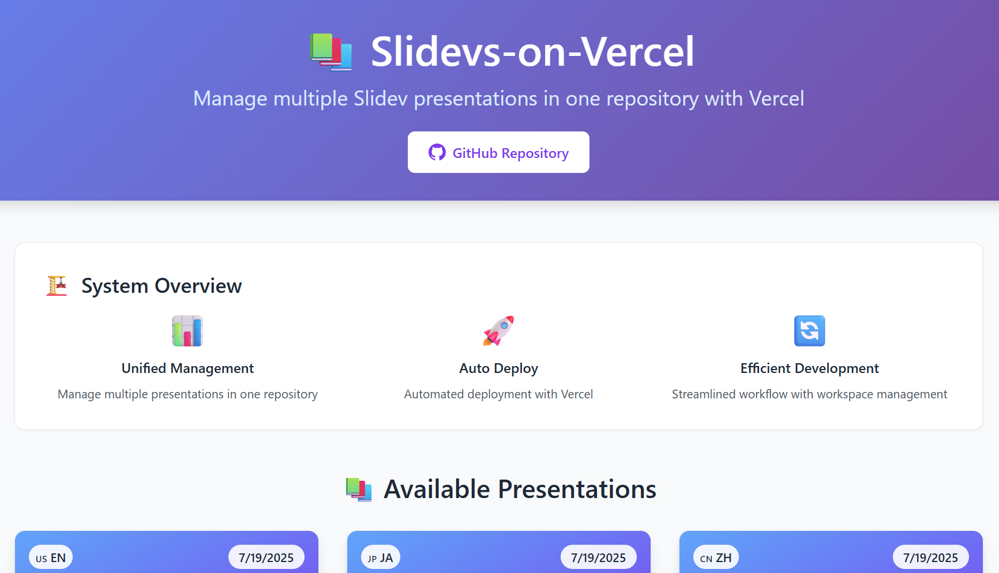
slidev（Markdownでスライドを書いてWeb表示）をVercel上で無料ホストするサンプル
1つのリポジトリに複数のslidevスライドを置いてVercel連携することを可能にしたことがポイント。 （過去事例が1リポジトリ-1スライドの組み合わせしかなく、不便だったので自作しました）
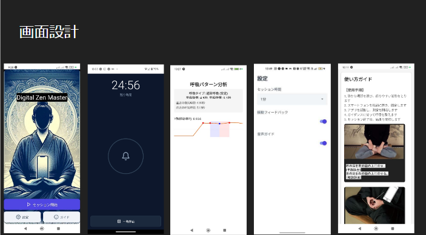
禅の体験をスマートフォンで行えるアプリ。
加速度センサで姿勢と呼吸を測定/評価し、振動と音でフィードバックする。 Spajam2024本線で発表。（数秒ですが数年ぶりに、地上波TVにのりました）

ペットボトルをピカピカ輝かせるスマホアプリを作成。
スマホアプリにより、自在なタイミングや色で輝かせられることがポイント。 Spajam2024予選で発表。優秀賞（→本選出場！）
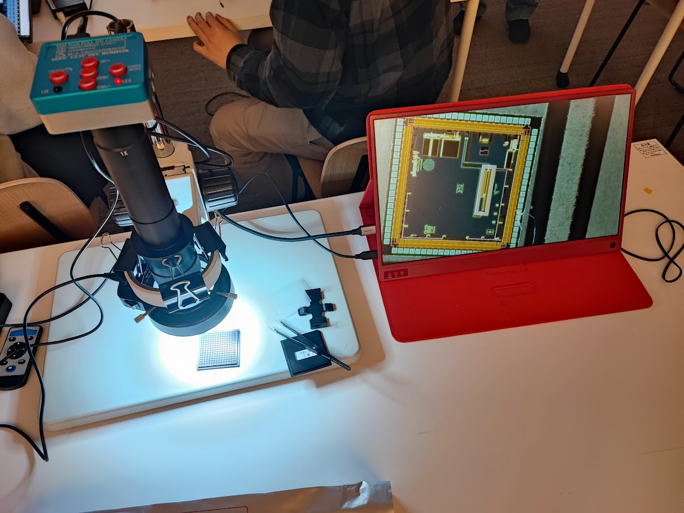
ISHI会という半導体コミュニティにて、1日でCMOSインバータを設計するイベントに参加しました。
「OpenMPW Shuttle Program」とは、無料で130nm or 180nmプロセスの半導体を製造できるGoogle後援の仕組みを活用して製造。 設計したチップが半年後に届き、わいわい測定しました。
合計５つのステージがあり、各ステージの奥になるワープゲートを全部潜るとクリアとなります。
photonでネットワーク同期されており、他プレイヤーと同時プレイが可能です。ゼルダの祠世界のような、神秘的かつ無機質な世界観となるように工夫しました。
衝突判定と移動処理がキモと気づいてからはサクサク作れました。
「UNITE IN THE SKY」という曲のPV風動画をUnityで作ってみました。ほぼコーディングなしで
を行いました。やり方を調べながら20時間くらいで作成。
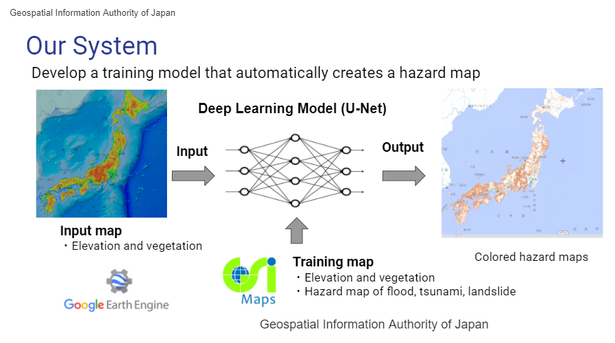
NASA主催の宇宙データを活用するハッカソンに出場し、深層学習でハザードマップを自動生成するAIを開発しました。
東京予選で優勝。
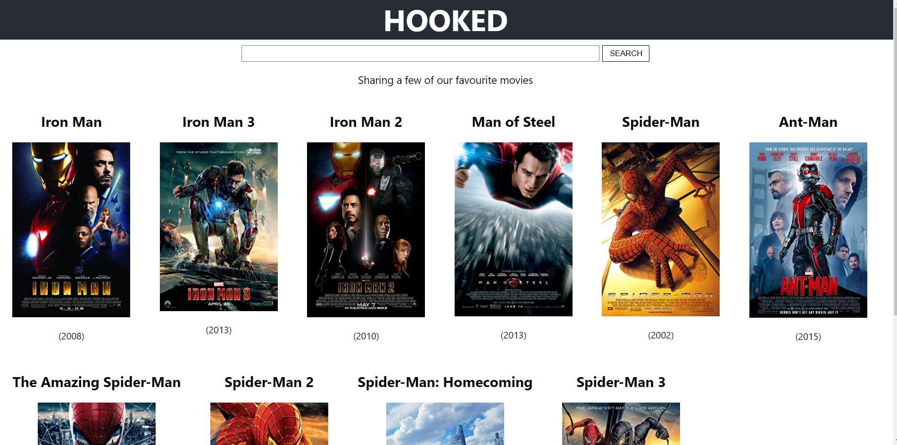
Reactで映画検索サイトを作りました（チュートリアル実施）
https://www.freecodecamp.org/news/how-to-build-a-movie-search-app-using-react-hooks-24eb72ddfaf7/
画像を送ると顔をスタンプで隠してくれるLinebotを作りました。
絵を書く過程を動画（GIF）にするサービス．絵の描き方を知ったり，絵の予想で期待と裏切りを楽しめる．
5文字か10文字の文書を書いてる風のGIFにするサービス．今思うと2chの連続投稿に似てる．機械学習で字の書き方推定とか組み込めたらもっと柔軟にできそうと企画中．
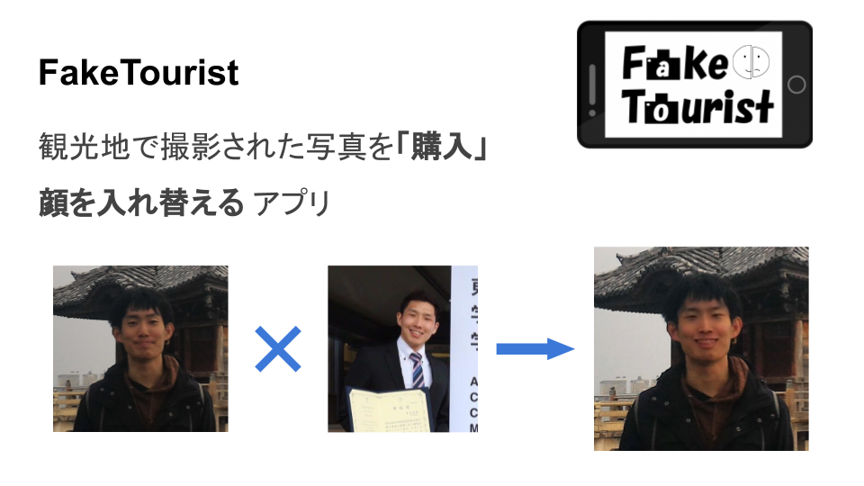
写真の顔を入れ替える権利を売買するアプリ．旅行先の映える写真を顔を入れ替えて自分のものにできる．
Spajam2019で発表
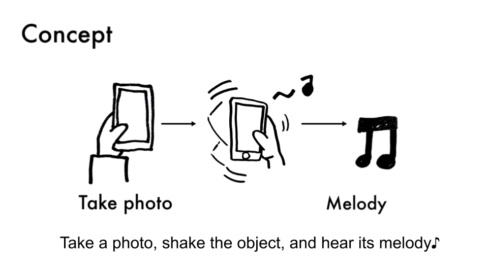
認識した物体のHSV色彩情報から音楽を生成するアプリ．
Sechack365の海外派遣チームで出場＆発表．チームのおかげでEluv.io企業賞．ブログに派遣記＆体験談書きました
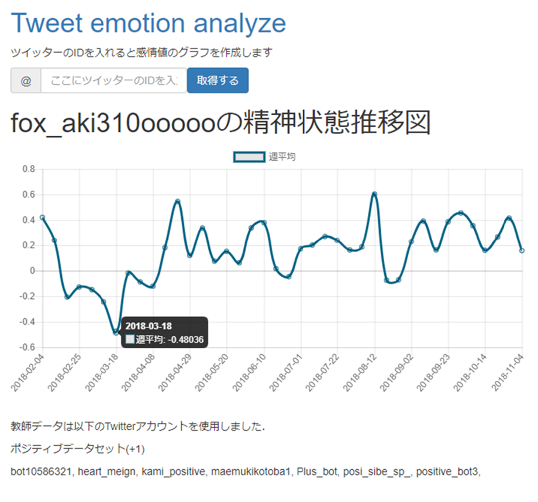
Twitterの投稿文を感情値判定し，その推移図を表示するWebサービス．twitterの名言bot，悪口botからfasttextで文章の類似度判定機を作り，感情値を判定．
Sechack365でチーム「We pray for harmonic SNS communication」として発表．（開発）
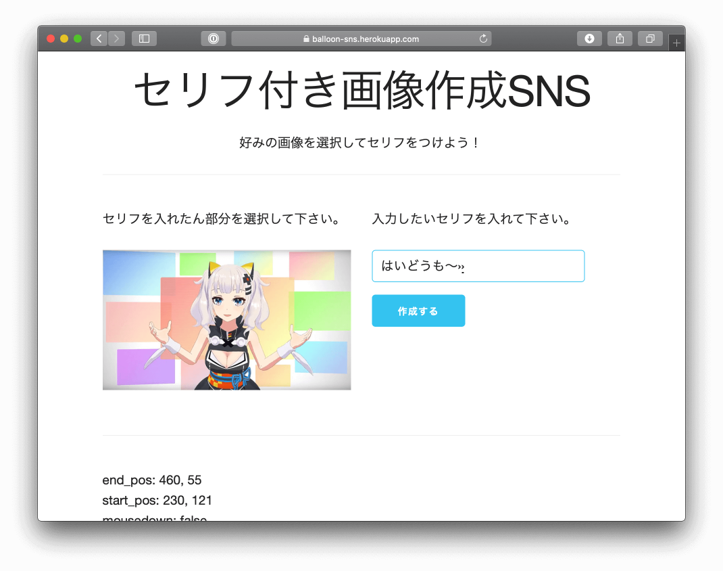
ユーザーが投稿した画像に，セリフを埋め込みセリフ付き画像を作成するサービス．セリフ付き画像の作成を低コストにし，コミュニケーションの円滑化を目指す．
Sechack365でチーム「We pray for harmonic SNS communication」として発表（原案）
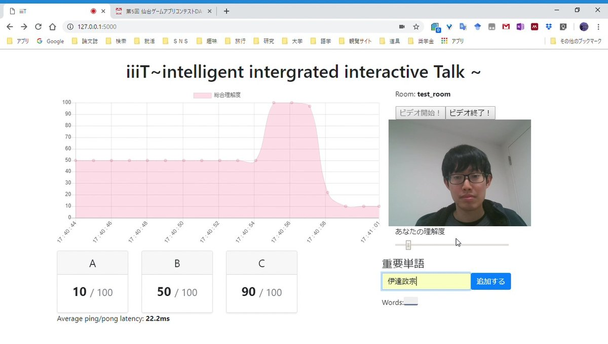
「知ったかぶり」のない生産的な会議を実現するWebアプリ．表情orバーから理解度の判定，音声or打ち込んだ単語の意味表示機能．Web周りやサービス案の落とし込み．
DATEAPPS2019で出典．全脳アーキテクチャ若手の会東北支部．
「2分でアメリカ軍の96%の兵士が寝落ちした方法」など，いくつかの文献からの睡眠のアドバイスを，音声によって行うスマートスピーカーのスキルを開発
JPhacks2018仙台予選 全脳アーキテクチャ若手の会東北支部
Unity教室で作成．近寄る赤箱から逃げつつ，クリスタルを集めるボール転がしゲーム．
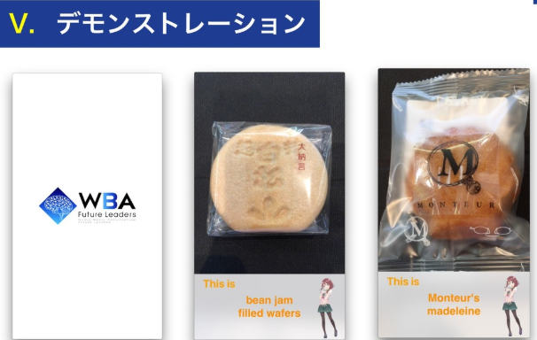
外国人観光客向けに仙台のお土産の名前を判定してくれるスマホアプリ
SPAJAM2018仙台予選 優秀賞 全脳アーキテクチャ若手の会東北支部
スマホでDJ体験ができるアプリ．スマホ端末の加速度，角速度からモーションを把握し，曲を選択，変調を加える．
JPhacks2017仙台予選
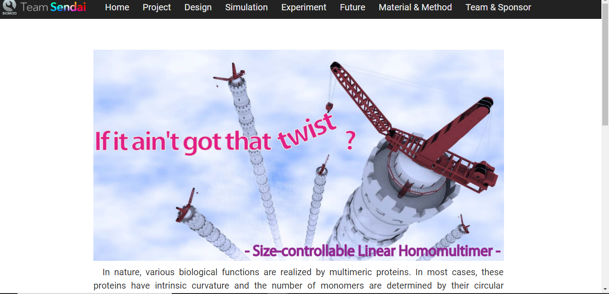
ハーバード大学で開催されたDNAを用いた面白い生体分子を創るコンテスト．Webページ作成やシミュレーションなどを担当．TeamSebdaiとして統合優勝（the grand prize）
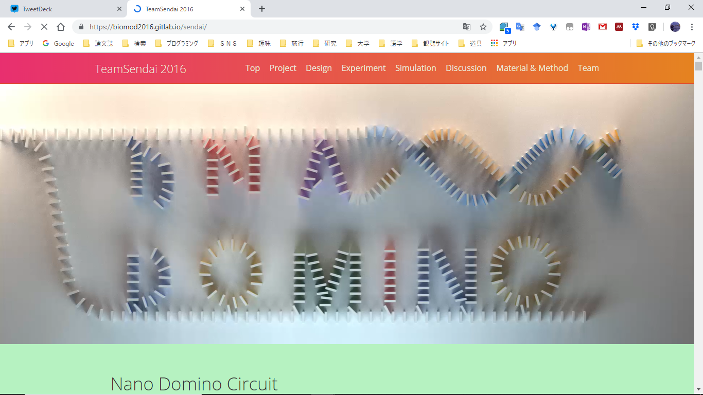
去年に続き，Webページ作成のお手伝い．
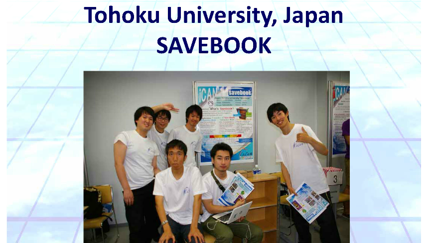
地震の時に本棚から本が落ちるのを守るIoT仕切り．普段は邪魔にならず，震度4以上の揺れを感知したらモーターで仕切りが上がる．
国際ナノ・マイクロアプリケーションコンテスト（Ican'14) 第3位（the third prize）
乳しぼりの腕を4つの加速度センサを埋め込んだシリコン樹脂デバイスで判定．PC上でProcessingによりゲーム化．
国際ナノ・マイクロアプリケーションコンテスト（Ican'14)出場作品．
Amazonで固体火薬(a8-3)を購入し，マーベルチョコやバルサ板で胴体，ビニールやタコ糸でパラシュートを作成．大学初年度友人と＋Jaxaスペーススクールなどで複数回作りました．